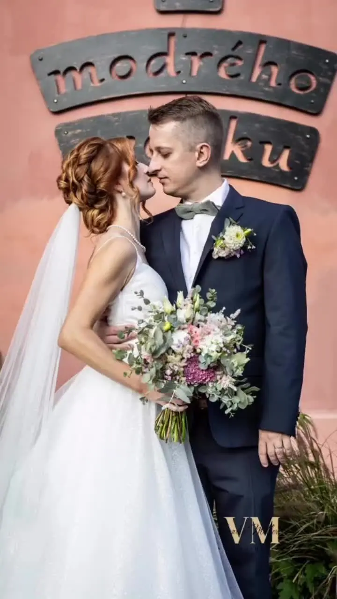
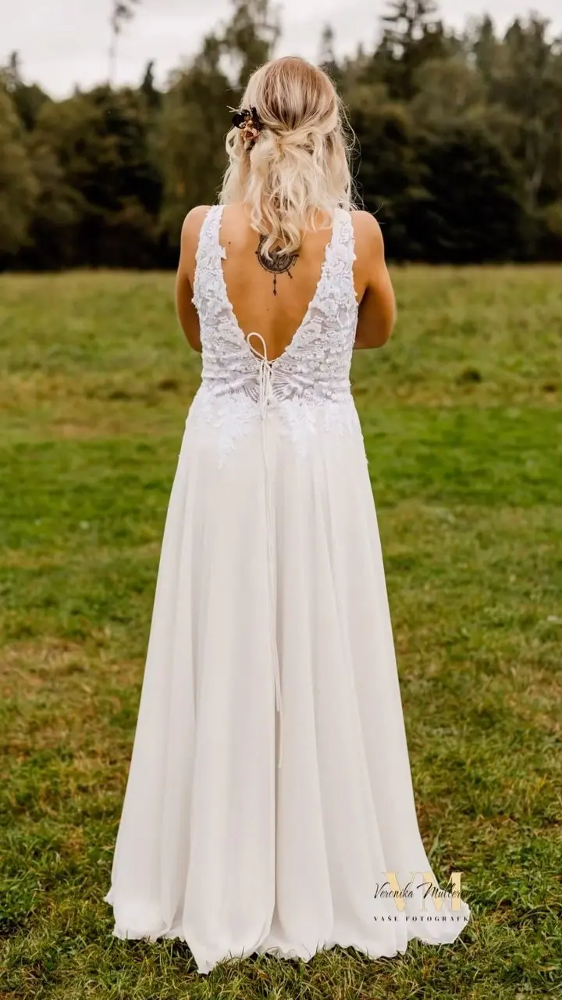

jedna
Svatební focení
Fotím celý svatební den od příprav nevěsty a ženicha až po večerní zábavu. Ke každému balíčku dostanete předsvatební focení jako dárek a neomezený počet upravených fotografií.

Svatební a rodinná fotografka · Opava, Ostrava, Krnov

Jmenuji se Veronika Müllerová a jsem svatební a rodinná fotografka z Opavy. Každé focení s vámi nejdřív společně vymyslím podle toho, co máte rádi, a pak si ho spolu užijeme. Fotím svatby, rodiny, páry i portréty na Opavsku i po celém Moravskoslezském kraji.
Více o mně
Co fotím
jedna
Fotím celý svatební den od příprav nevěsty a ženicha až po večerní zábavu. Ke každému balíčku dostanete předsvatební focení jako dárek a neomezený počet upravených fotografií.
dvě
Fotím děti, vnoučata i celé generace vaší rodiny doma, v přírodě nebo tam, kde to máte rádi. Domácí mazlíčci na fotkách rozhodně nesmí chybět.
tři
Zásnubní, předsvatební, nebo prostě jen proto, že chcete mít společné fotky. Focení může být romantické, tajemné i vtipné, třeba při opékání špekáčků nebo pouštění draka.
Osobní portréty pro sociální sítě, do portfolia nebo jako dárek. Téma, styl i oblečení si předem upřesníme podle vašich představ.
Na chvíli zastavíme čas.


Za objektivem
Focení svatby pro mě není jen zachycení toho, co se zrovna děje. Chci s vámi vytvořit váš vlastní svatební příběh. Proto spolu začínáme už dlouho před svatbou: na nezávazné schůzce, osobně nebo online, probereme vaše představy, koníčky a všechno, co máte rádi, a z toho pak vymyslíme originální fotky.
Stejně to dělám u rodin, párů i portrétů. Domluvíme se na tématu, oblečení i místě, ať už je to váš obývák, les, park, nebo loď. Na fotkách pak působíte přirozeně, protože děláte věci, které vás baví. A pokud k vaší rodině patří pes, kočka nebo kůň, patří i na fotky.
Na Opavsku je spousta krásných míst na focení: zámek a rybníky v Raduni, zámek a park v Hradci nad Moravicí, Velké Hoštice, Stříbrné jezero nebo přehrady Harta a Kružberk. Kdo má rád průmysl a velké kontrasty, toho vezmu do Dolních Vítkovic v Ostravě.
Veronika
Potkáme se osobně nebo online, poznáme se a probereme, co od focení čekáte. Schůzka je nezávazná a zdarma.
Nápady propojíme s vašimi koníčky a vložíme je do svatebního plánu tak, aby nenarušily průběh dne. Domluvíme se i na momentech, které fotografům často unikají, třeba na poděkování rodičům.
Vyzkoušíte si, jaké je to být před objektivem, a nervozita rychle opadne. Toto focení vám dávám jako svatební dárek.
Budu s vámi tak dlouho, jak určuje váš balíček. Prvních zhruba 10 fotek pošlu do týdne, všechny upravené fotografie nejpozději do 8 týdnů.
Portfolio
Fotografie jsou ilustrační
Otázky
Neomezený počet profesionálně upravených fotografií v elektronické podobě. Rozsah focení, tedy od kdy do kdy fotím, záleží na balíčku, který si vyberete.
Ze svatby pošlu prvních zhruba 10 fotek do týdne, všechny ostatní nejpozději do 8 týdnů, obvykle dřív. Fotky z rodinného focení posílám e-mailem nejpozději do 2 týdnů.
Hodinové focení venku stojí 1 990 Kč, u vás doma 2 990 Kč a dostanete alespoň 5 upravených fotek. Dvouhodinové focení stojí venku 2 990 Kč a doma 3 990 Kč a dostanete alespoň 20 fotek.
Kdekoliv, kde to máte rádi: doma, na zahradě, v lese, ve městě nebo na vodě. Fotím v Opavě, Ostravě, Krnově, Bruntálu, v Jeseníkách i v Beskydech, a klidně i v Polsku nebo u moře.
Napište pár vět o tom, co si představujete. info@fotografkaveronika.cz